An experience of three-dimension real world

It is a scalable and universal design system. As a transmision, it leads us into a more sensible and accessible future.
Watch the video
It is a scalable and universal design system. As a transmision, it leads us into a more sensible and accessible future.
Watch the video
It's an open source project, meaning you can clone it, modify it, and even republish it arbitrarily. We welcome your use of it in your projects, even without having to mention that we made it (best to confide it on the "About" page, but it is not required.)
Visit Github
A easy-understood document, about Plastic Design visual, interactive and motion
Read the article
It's an open source project, meaning you can clone it, modify it, and even republish it arbitrarily. We welcome your use of it in your projects, even without having to mention that we made it (best to confide it on the "About" page, but it is not required.)
Visit Github